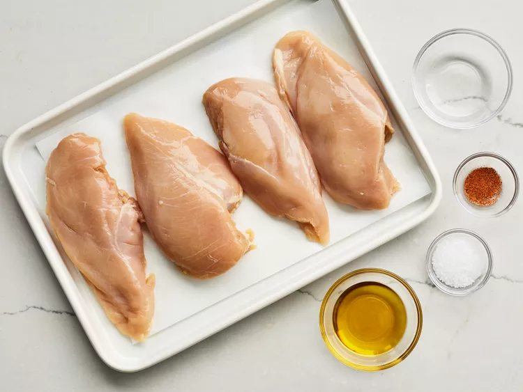
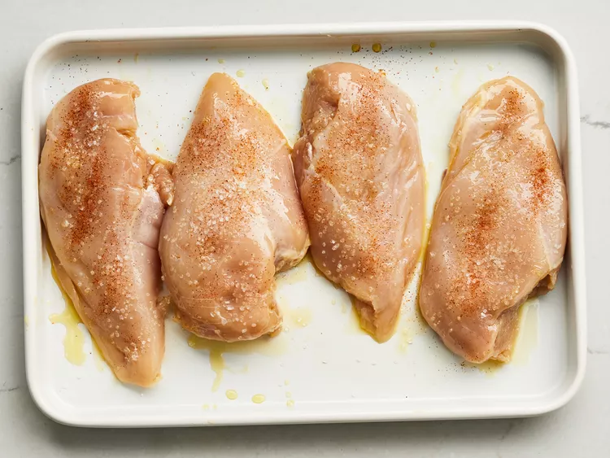
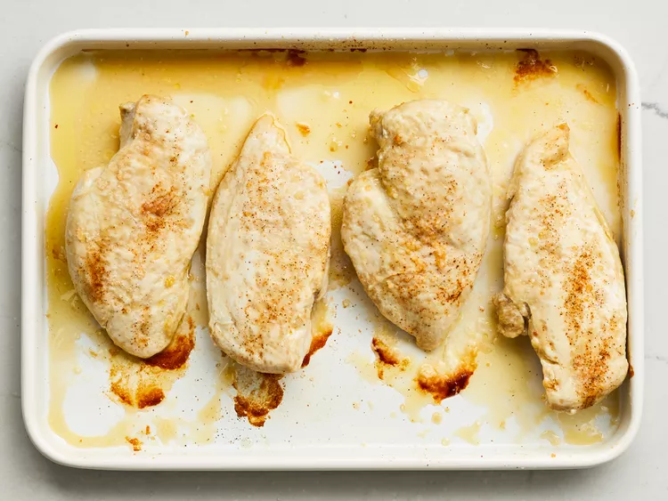
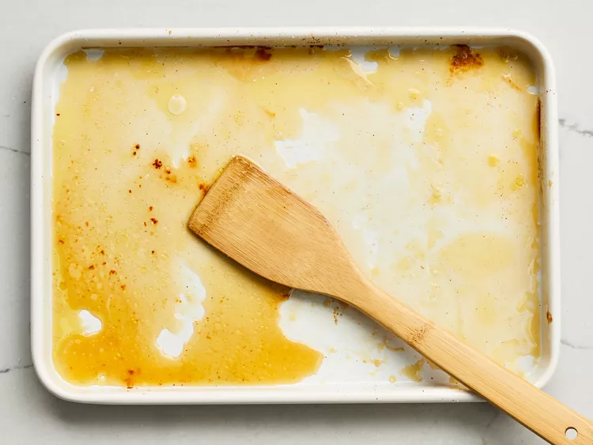

Learn how to bake chicken that's tender, juicy, and perfect every time with this simple, 5-ingredient recipe for boneless, skinless chicken breasts. Adding just a bit of chicken broth to those beautiful pan drippings creates a tasty pan sauce that adds extra flavor at the table.
It depends on the size of the chicken breasts. Smaller chicken breasts will bake in a shorter amount of time, while larger breasts will take a bit longer. If you use the 5-ounce breasts the recipe calls for, the chicken should be ready after about 25 minutes in the pre-heated oven. When the chicken is done, the juices will run clear and an instant read thermometer inserted into the center should read at least 165 degrees F.
We think 400 degrees F is the perfect temperature for baking chicken breasts. That's what this recipe calls for, and it yields perfectly baked results.
The world is your oyster when it comes to picking side dishes for baked chicken breasts. It's such a simple dish, almost anything will work: From a basic side salad to indulgent mashed potatoes. In need of a little inspiration? Browse a few of these mouthwatering recipe collections: